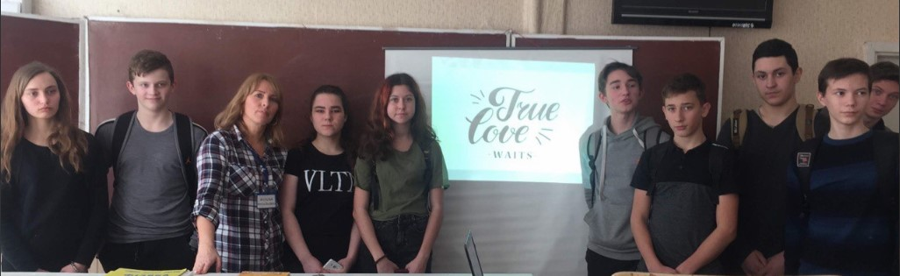

В нашем обществе кризис института семьи усугубляеться и молодое поколение не имеет знаний и навыков, для формирования личности, характера, постановки жизненных целей, создания крепкой и счастливой семьи. В ответ на нужду общества в этом вопрсе, на базе Благотворительного фонда "Харьковский Центр помощи беременным" была разработана программа в виде тренинговых занятий, для подростков под названием "Настоящая любовь ждет".
Тренинговые занятия помогут старшеклассникам лучше узнать себя и осознать свои жизненные цели,приобрести знания для будущей профессии, сохранить репродуктивное здоровье,овладеть навыками создания здоровых отношений и счастливого брака в будущем. Курс лекций предназначен для учащихся 9 - 11 классов. Использование игр,работа в группах, тестирование, просмотр мультимедийных материалов делает программу интесной и эффективной для восприятия.
Программа "Настоящая любовь ждет" включает в себя 12 тренинговых занятий.
- 1.Как понять,что она настоящая?!
- 2.Этапы развития личности и формирования характера.
- 3.Теория множественых интелектов.
- 4.Постановка жизненных целей.
- 5.Заболевания, передающиеся половым путем.
- 6.Чудо жизни.
- 7.Искусственное прерывание беременности.
- 8.Эмоциональные последствия ранних половых отношений.
- 9.Свидания и границы.
- 10.Как распознать нездоровые отношения?
- 11.На каком языке говорит любовь?
- 12.Здоровый брак и семейное счастье.
